anisotropy, domain states, and hysteresis —
how small grains record magnetic fields, and how to read your loops
2026 IRM Summer School of Rock Magnetism
Institute for Rock Magnetism · University of Minnesota
Where we are going today
Yesterday: rocks respond to fields as dia-, para-, and ferromagnetic mixtures — and ferromagnetic (s.l.) minerals give rocks memory
Today we zoom inside individual ferromagnetic particles and ask:
What fixes a magnetization along particular directions in a crystal? (anisotropy energy)
What happens as particles get bigger? (single domain → flower → vortex … → multidomain)
What does it take to flip a moment? (the flipping field, Stoner & Wohlfarth 1948)
What do hysteresis loops and backfield curves tell us?
Multidomain grains get their own treatment in Max's lecture later this morning
Part 1
Electronic spins: where atomic moments come from
Unpaired spins make atomic magnets
Each electron carries a spin moment of one Bohr
magneton: \(m_b = 9.27\times10^{-24}\ \mathrm{Am^2}\)
Electrons fill orbitals under three rules:
Pauli exclusion, increasing energy, and
Hund's rule
Paired spins cancel; unpaired spins in the 3d shells
of transition metals survive as net atomic moments
Ion
3d electrons
Unpaired spins
Moment (spin-only)
Fe3+
3d5
5
5 mb
Fe2+
3d6
4
4 mb
Ti4+
3d0
0
0
Iron is the star of rock magnetism —
Mn2+ (5 mb) and Cr3+ (3 mb)
also have magnetic moments but are less abundant on Earth.
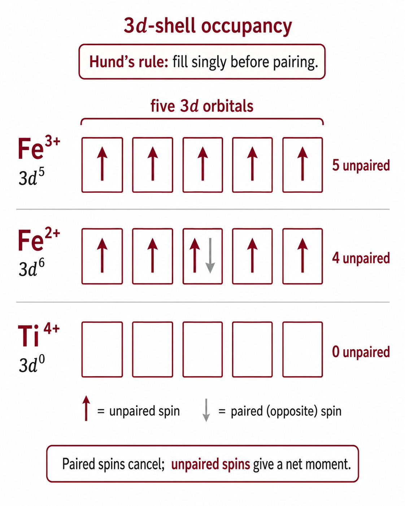
Paramagnetism: the Langevin function
independent moments vs. thermal chaos
No exchange coupling → each atomic moment responds independently
to two competing influences:
the field, which pulls it into alignment (\(E_m = -mB\cos\theta\))
thermal agitation \(k_BT\), which randomizes it
The net alignment depends on the ratio of the two energies
(Langevin, 1905):
\(\dfrac{M}{M_s} = \coth a - \dfrac{1}{a} = \mathcal{L}(a)\) with \(a = mB\,/\,k_B T\)
\(m\) — atomic magnetic moment (unpaired spins) ·
\(B\) — applied field ·
\(k_B\) — Boltzmann's constant ·
\(T\) — temperature (K) ·
\(M_s\) — saturation magnetization: every moment aligned
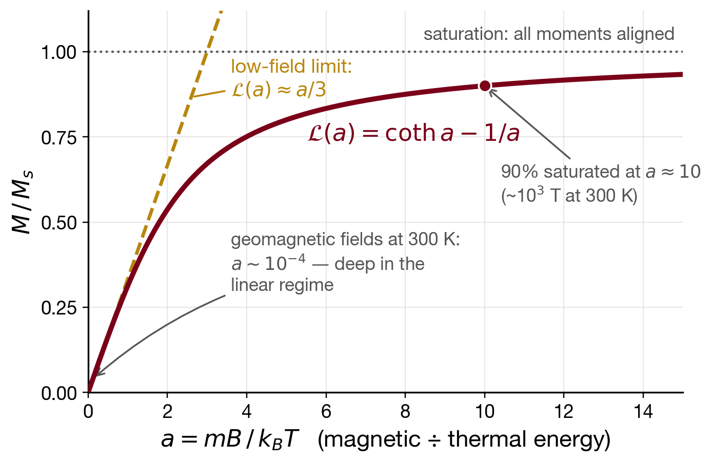
Paramagnetism: Curie's law
Paramagnetic susceptibility (\(\chi_p\)) varies inversely with temperature. In Earth-like fields (where the response is linear), the relationship is:
\(N/v\) — number of moments per volume ·
\(m\) — atomic moment ·
\(\mu_0\) — permeability of free space ·
\(C\) — the Curie constant, set by how many moments and how strong
\(\chi_p\) is positive, small, and ∝ 1/T —
cool the specimen and the same field aligns the moments more effectively
Remove the field and \(M\) vanishes: no memory
Recall: magnetic susceptibility (\(\chi\)) is the response
coefficient — the magnetization gained per unit of applied field, \(M=\chi H\)
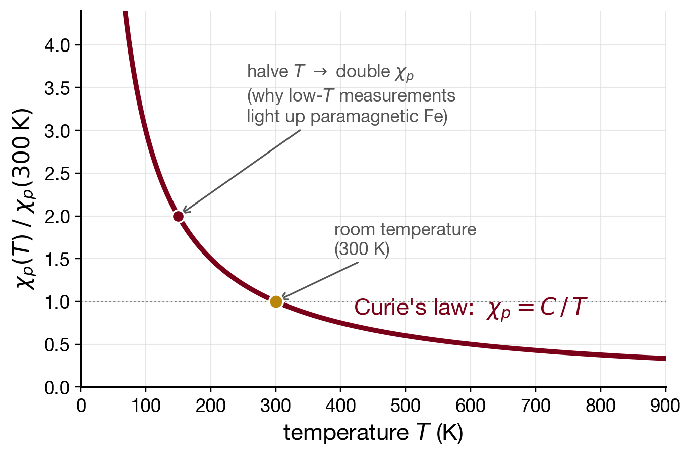
Part 2
Ferromagnetism: spins working in concert
Exchange coupling creates magnetic order
Exchange couples neighboring spins through orbital
overlap.
\(\epsilon_e\): exchange energy;
\(J_e\): exchange constant, with units of energy;
\(\mathbf{S}_i,\mathbf{S}_j\): spin vectors on neighboring lattice sites \(i\) and \(j\).
\(J_e>0\): parallel
\(J_e<0\): antiparallel
Direct exchange requires overlap between neighboring
magnetic-ion orbitals and is important in Fe, Ni, and Co metals.
In oxides and sulfides, coupling commonly passes through an anion’s
\(p\) orbitals: superexchange, often favoring
antiparallel alignment.
Exchange energies are enormous: equivalent to a field of order
1000 T on each moment.
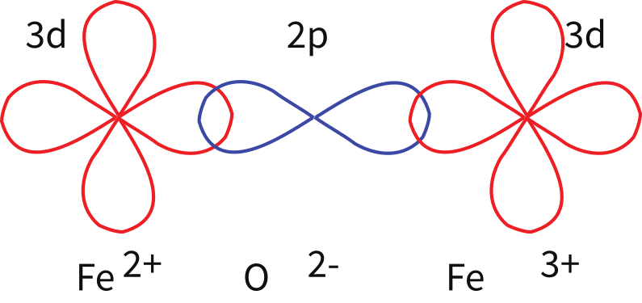
Fe moments coupled through oxygen \(2p\) orbitals.
Tauxe & Swanson-Hysell (2026), Essentials of
Paleomagnetism, redrawn from O'Reilly (1984) (CC BY 4.0).
The magnetic ordering zoo
"ferromagnetic (sensu lato)" covers every ordering with a net moment
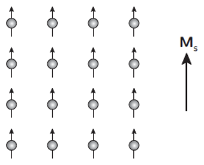
ferromagnetism (s.s.)large Ms
Fe, Ni, Co, Fe–Ni alloys (meteorites!)
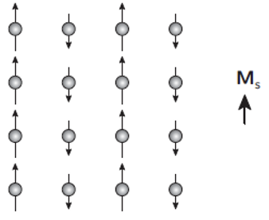
ferrimagnetismunequal sublattices → net Ms
magnetite, titanomagnetite, pyrrhotite, greigite
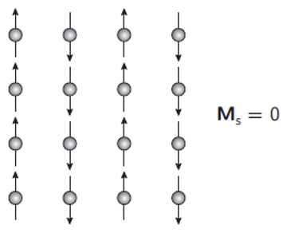
antiferromagnetismMs = 0
ilmenite (orders below ~57 K), ulvöspinel
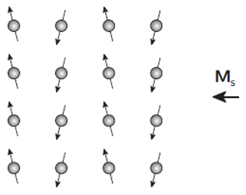
spin-canted AFweak net Ms
hematite
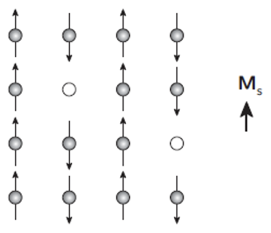
defect AFweak net Ms
goethite, fine-grained hematite
Antiferromagnetism and ferrimagnetism are the
main ordering types in terrestrial rock-forming minerals — true ferromagnetism is for metals.
Ordering vanishes above the Curie temperature (ferro/ferrimagnets) or
Néel temperature (antiferromagnets).
Spin-ordering panels after R. Egli
Ferromagnetic order dies at the Curie temperature
As temperature increases (\(T \rightarrow T_c\)), thermal fluctuations increasingly disrupt exchange alignment, causing saturation magnetization (\(M_s\)) to collapse.
Above \(T_c\), the mineral becomes paramagnetic, governed by the Curie–Weiss law (which accounts for exchange interactions between spins):
Near \(T_c\), the collapse of order is characterized by a quantum-mechanical power law:
\(\;M_s(T)/M_s(T_0) = \left[(T_c - T)/(T_c - T_0)\right]^{\gamma}\)
For magnetite, data (B. Moskowitz, in Banerjee 1991) are best fit with
\(\gamma \approx 0.36\text{–}0.39\) and \(T_c \approx 565\text{–}580°\mathrm{C}\).
The ordering temperature is diagnostic of mineralogy (more in Friday's high-T lecture).
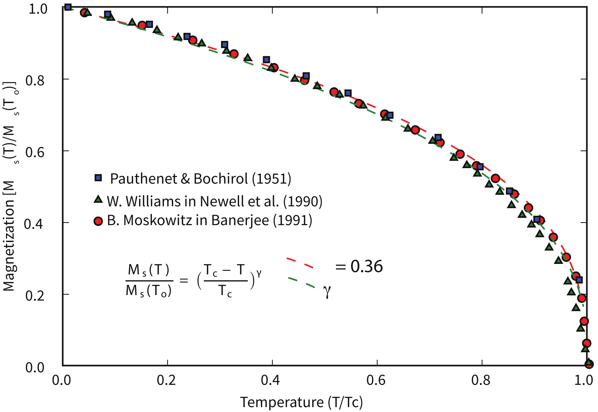
Ms(T) for magnetite with power-law fits.
Tauxe & Swanson-Hysell (2026), Essentials of Paleomagnetism (CC BY 4.0);
data of B. Moskowitz cited in Banerjee (1991).
Part 3
Anisotropy: why some directions are easy
The governing principle: energy minimization
A ferromagnetic grain adopts the magnetization configuration that minimizes its
total energy. The key energies (as volume-normalized energy densities \(\epsilon\), J/m³) are:
Exchange \(\epsilon_e\)
Strongly favors neighboring spins remaining aligned, but does not by itself select a preferred direction in the grain.
Zeeman Energy (External Field) \(\epsilon_z = -\mathbf{M}\cdot\mathbf{B}_{\text{ext}}\)
Pulls M toward an applied field — the energy that lets fields do work on the grain.
Its self-field sibling — the demagnetizing (self) energy — appears under shape anisotropy.
Anisotropy \(\epsilon_a\)
Defines energetically favorable ("easy") and unfavorable ("hard") axes of magnetization within the grain. Driven by magnetocrystalline (lattice symmetry), magnetostrictive (stress), and shape (demagnetizing field) effects
Anisotropy creates energy barriers between "easy" directions.
A barrier high enough to resist thermal fluctuations can hold a magnetization in place for
billions of years — the physical basis of paleomagnetism.
Magnetocrystalline anisotropy: magnetite
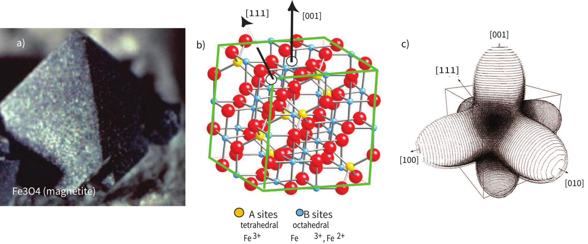
a) Magnetite octahedron [photo: Lou Perloff, The Photo-Atlas of Minerals].
b) Inverse spinel structure: Fe³⁺ on tetrahedral A sites; Fe²⁺ + Fe³⁺ on octahedral B sites.
c) Anisotropy energy surface [from Williams et al., 1995]. Via Tauxe & Swanson-Hysell (2026) (CC BY 4.0).
For a cubic crystal, with direction cosines \(\alpha_i\) of
M relative to [100], [010], [001]:
Radius and color = energy of magnetizing in that direction
Red axes: hard [100] directions (bulges)
Blue dashed axes: easy [111] directions (dimples)
Toggle "Crystal Geometry" to compare with the cubic crystal
Drag to orbit — find the eight dimples
Interactive from Tauxe & Swanson-Hysell (2026), Essentials of Paleomagnetism ch. 4 (CC BY 4.0)
Anisotropy constants depend strongly on temperature
Electronic interactions depend on interatomic spacing → \(K_1, K_2\) vary strongly with \(T\)
Magnetite's \(K_1\) crosses zero at ~130 K — the isotropic point \(T_i\)
At \(T_i\) with the main \(K_1\) magnetocrystalline barriers gone, only the weak \(K_2\) term
remains and spins wander far more freely — though shape and stress anisotropy
remain
Below \(T_i\) the topology inverts: cube edges become easy, body diagonals hard
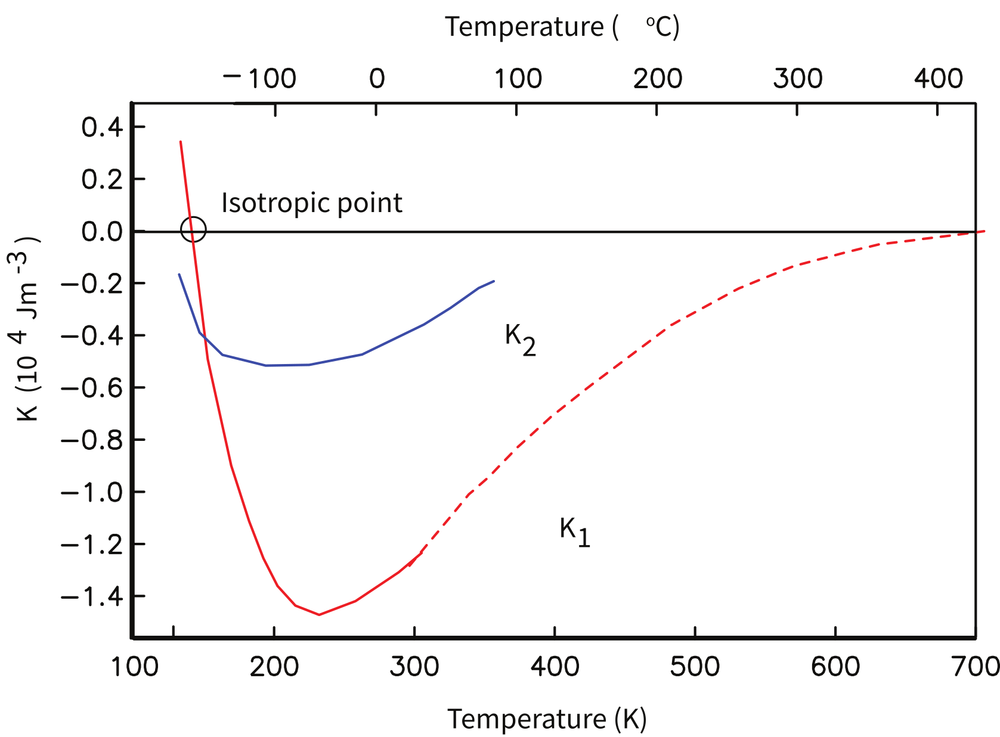
\(K_1\) (red) and \(K_2\) (blue) of magnetite vs. temperature; solid: Syono (1963), dashed: Fletcher & O'Reilly (1974).
Tauxe & Swanson-Hysell (2026), Essentials of Paleomagnetism (CC BY 4.0).
The same landscape at the isotropic point (130 K)
Same grain, same colorbar scale as the 300 K figure
\(K_1 = 0\): the [111] dimples and [100] bulges are gone —
only the weak \(K_2\) term remains
The magnetocrystalline barriers have all but collapsed —
shape, stress, and defect anisotropies persist
Cooling magnetite through \(T_i\)
momentarily unpins the magnetization that magnetocrystalline anisotropy alone
was holding.
Interactive from Tauxe & Swanson-Hysell (2026), Essentials of Paleomagnetism ch. 4 (CC BY 4.0)
Low-temperature transitions & demagnetization
Cooling a room-temperature saturation remanence (RTSIRM) applied to a magnetite-bearing sample can lead to demagnetization due to two factors:
• \(T_i \approx 130\ \mathrm{K}\): \(K_1 \rightarrow 0\), unpinning multidomain (MD) walls.
• \(T_v \approx 120\ \mathrm{K}\): The cubic to monoclinic Verwey transition.
On warming, magnetization only partly recovers. The unpinned MD walls reorganize irreversibly, while stable single-domain (SD) magnetization largely survives.
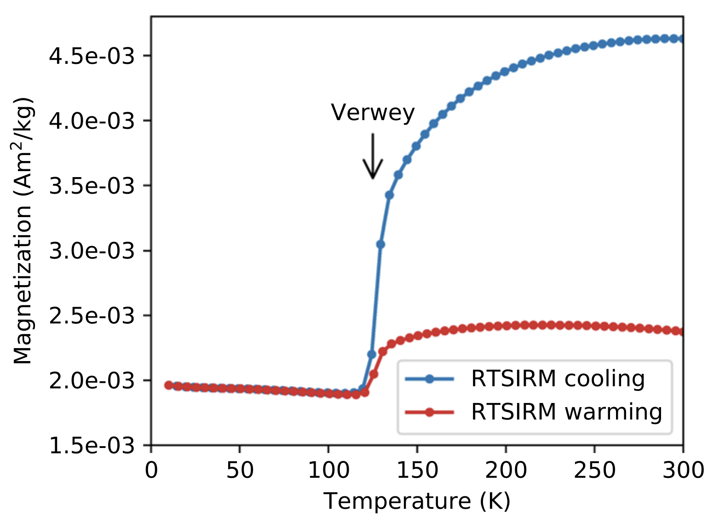
RTSIRM cooling (blue) and rewarming (red) of a magnetite-bearing basaltic dike specimen — through the
isotropic point (~130 K) and Verwey transition (~120 K). Data: Swanson-Hysell et al. (2021),
MagIC database earthref.org/MagIC/20213.
Tauxe & Swanson-Hysell (2026) (CC BY 4.0).
Uniaxial anisotropy: hematite's easy plane
\(\epsilon_a = K_u\sin^2\theta\)
Sign of \(K_u\) defines the geometry:
• \(K_u > 0\): Single easy axis
• \(K_u < 0\): Perpendicular easy plane
Hematite's extreme contrast:
• Out-of-plane is very hard: Perpendicular to the basal plane, \(K_u \approx -10^6\ \mathrm{J\,m^{-3}}\). The canted moment is locked in the plane.
• In-plane is very easy: Basal plane anisotropy is \(\sim 5\) orders of magnitude weaker (\(\sim 10\ \mathrm{J\,m^{-3}}\)), pinned only by minor stress or defects.
Interactive from Tauxe & Swanson-Hysell (2026), Essentials of Paleomagnetism ch. 4 (CC BY 4.0)
Magnetoelastic anisotropy: stress & magnetic energy
Magnetoelastic Effect: Physical stress (\(\sigma\), Pa) deforms the lattice, shifting magnetic energy barriers.
Uniaxial Form: Stress acts as a virtual symmetry axis. The sign of \(\bar{\lambda}_s\sigma\) dictates whether it creates an easy axis or an easy plane.
The Scale (\(\bar{\lambda}_s \approx 35\text{--}40\times10^{-6}\)):
• Maximum fractional length change is \(\sim 0.0038\%\).
• For a \(1\ \mu\mathrm{m}\) grain, domain changes shift boundaries by only \(\sim 0.04\ \mathrm{nm}\) (less than typical interatomic spacing).
Why it matters in typical grains
Local Stress Fields: Even in unstressed rocks, crystal defects and dislocation networks produce complex, spatially varying internal stress fields (\(\sigma\)).
Energy Landscapes: These varying stress fields map directly onto a localized magnetic potential energy landscape.
Microscopic Pinning: Domain walls (MD) and vortex cores can get trapped in stress-induced energy wells, giving grains coercivity (\(H_c\)).
Shape anisotropy
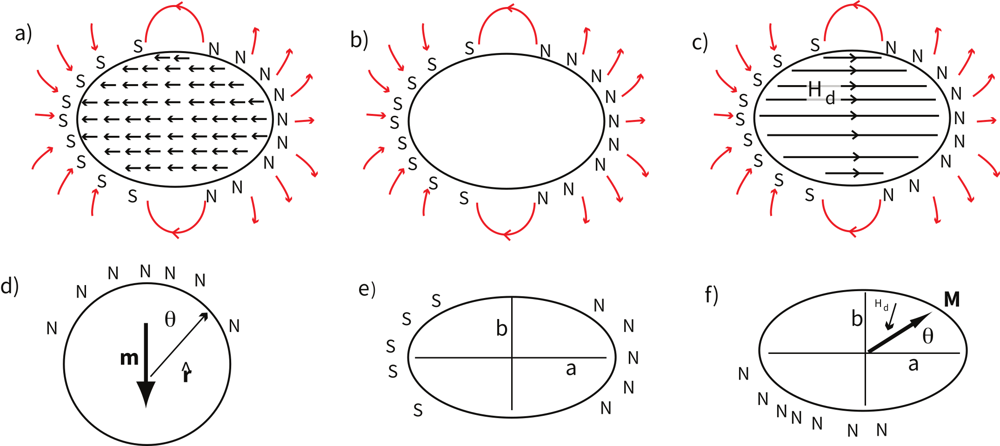
Internal magnetization ↔ surface poles ↔ internal demagnetizing field \(\mathbf{H}_d\).
Tauxe & Swanson-Hysell (2026), Essentials of Paleomagnetism, redrawn from O'Reilly (1984).
\(\mathbf{H}_d = -\mathbf{N}\cdot\mathbf{M}\)
The Demagnetizing Field (\(\mathbf{H}_d\)): Surface poles generate an internal magnetic field that directly opposes the grain's own magnetization (\(\mathbf{M}\)).
The Shape Factor (\(\mathbf{N}\)): A geometric tensor describing pole spacing.
• Sphere: \(N = \tfrac{1}{3}\) in all directions. No geometric preference.
• Prolate Ellipsoid: Poles are physically farther apart along the long axis (\(N_a < \tfrac{1}{3} < N_b\)).
The Easy Axis: Magnetizing along the long axis (\(\theta = 0^\circ\) in panel f) minimizes pole density, making it favored low-energy configuration.
This is comparable to or larger than magnetite's room-temperature magnetocrystalline anisotropy scale:
\(|K_1| \approx 1.1\text{--}1.3 \times 10^4\ \mathrm{J\,m^{-3}}\).
Takeaway: Shape strongly influences the easy axis and magnetic stability of elongated, near-single-domain magnetite.
Hematite (\(M_s \approx 2\ \mathrm{kA/m}\))
Negligible shape anisotropy
Because energy scales with the square of saturation magnetization (\(M_s^2\)):
\(M_s^2\) is \(\sim 5\times10^4\) smaller!
The same moderate geometry yields a negligible shape energy density:
\(K_{\mathrm{shape}} \approx 0.4\ \mathrm{J\,m^{-3}}\).
Takeaway: Hematite coercivity is generally governed by intrinsic and magnetoelastic anisotropy, not by magnetostatic shape anisotropy.
Part 4
The flipping field: Stoner–Wohlfarth
Microscopic coercivity: the field that flips a moment
Anisotropy sets the energy barrier; the barrier sets the field needed to force
a uniformly magnetized (single domain) particle over it:
Also called the flipping field, switching field,
or intrinsic coercivity.
These are single-grain, coherent-rotation values: the bulk coercivity of a random
assemblage is about half of \(H_k\), and interactions, vortex states, and domain
walls pull measured \(H_c\) lower still.
Explore: tilting the energy landscape until the moment flips
Prolate magnetite spheroid, field applied opposite the moment
Drag the field slider up: the occupied minimum gets shallower…
…and at \(\mu_0H_f\) it vanishes — the moment flips irreversibly
Lower panel: the flip happens where \(d\epsilon_t/d\theta = 0\) and
\(d^2\epsilon_t/d\theta^2 = 0\) — the flipping condition
(Stoner & Wohlfarth, 1948)
Interactive from Tauxe & Swanson-Hysell (2026), Essentials of Paleomagnetism ch. 5 (CC BY 4.0)
The flipping field depends on the field's angle
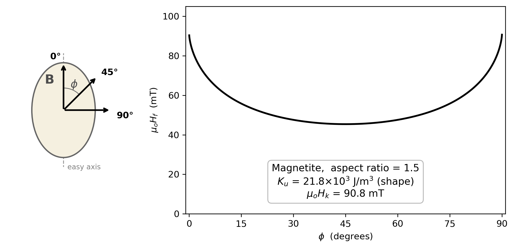
\(\mu_0H_f\) vs. \(\phi\) for a prolate magnetite spheroid (a/b = 1.5).
Tauxe & Swanson-Hysell (2026), Essentials of Paleomagnetism (CC BY 4.0).
Maximum at \(\phi = 0°\): the microscopic coercivity
\(\mu_0H_k = 2K_u/M_s\) from Part 3
Minimum at 45° — grains at intermediate angles flip easiest
(at \(\mu_0H_k/2\))
At exactly \(\phi = 90°\): no irreversible switching at any field — the moment
rotates reversibly and springs back
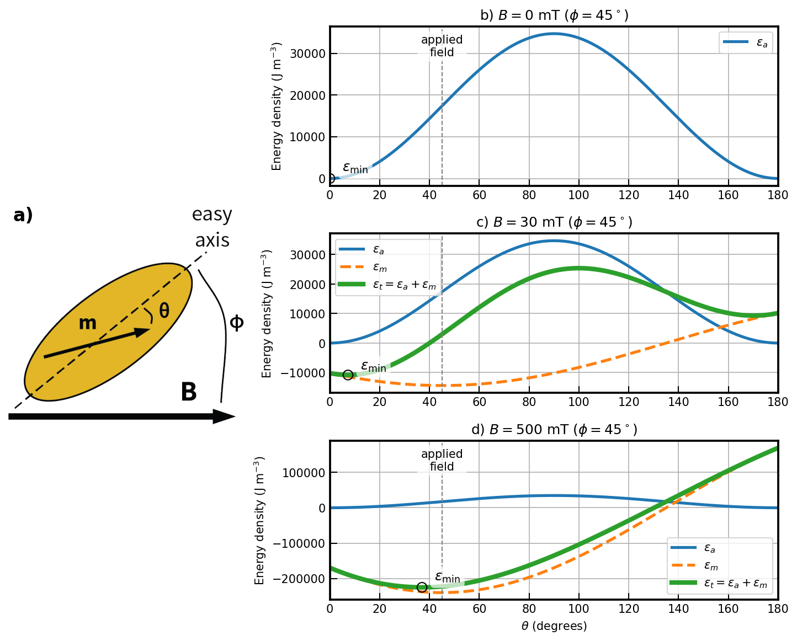
A uniaxial particle in an applied field
A prolate magnetite grain with elongation a/b = 2, field applied
at φ = 45° to the easy axis. Anisotropy energy \(\epsilon_a = K_u \sin^2\theta\)
digs two minima (the easy axis); the field adds the interaction energy
\(\epsilon_m = -M_sB\cos(\phi-\theta)\), which tilts the landscape.
A 30 mT field tilts it; 500 mT dominates it.
\(\epsilon_t = K_u \sin^2\theta \;-\; M_s B \cos(\phi - \theta)\)
Tauxe & Swanson-Hysell (2026),
Essentials of Paleomagnetism (CC BY 4.0).
Part 5
Hysteresis loops
The experiment: a vibrating sample magnetometer
Specimen on a rod between the pole pieces of an electromagnet (applied field \(B\), up to ~1.8 T on our Lake Shore VSM)
Specimen vibrates at a known frequency → its moment produces an
oscillating flux in pickup coils → induced voltage ∝ magnetic moment
A lock-in amplifier extracts the signal at the drive frequency →
sensitive measurement of \(m\) as a function of \(B\)
Protocol: ramp to a (hoped-for) saturating field, sweep down through zero to the
opposite extreme, and back: the hysteresis loop
One group ran such experiments yesterday afternoon on
D-6A specimens — every group will this week.
Loop shape encodes: mineralogy, domain state, grain size,
SP fractions, and the dia/paramagnetic matrix
Explore: one grain's loop, angle by angle
Exact Stoner–Wohlfarth physics: the moment rides the occupied
minimum of \(\epsilon_t = K_u\sin^2\theta - M_sB\cos(\phi-\theta)\), flipping only when that minimum
vanishes (at the marked \(\mu_0H_f\)). At φ = 0°: a square loop closing at ±μ₀Hf.
At φ = 45°: flipping at half the field, with reversible rotation rounding the corners.
At φ = 90°: no flip — a closed, fully reversible curve. Between 76.7° and 90°: the little cusp
at ±μ₀Hf is real — the flip reduces the projection along B, so m∥
overshoots just before switching (Stoner & Wohlfarth, 1948).
A rock: millions of randomly oriented grains
Stoner–Wohlfarth Ensemble: The bulk loop is the integrated sum of independent, random 3-D easy-axis orientations.
Squareness (\(M_r / M_s\)): Removing the field lets moments relax to their nearest easy axis. For any uniaxial shape, this geometry yields:
\(M_r = 0.5\,M_s\) exactly
Bulk Coercivity (\(\mu_0 H_c\)): While the flipping field for these individual grains is 100 mT, a randomly oriented assemblage has a collective coercivity of:
Tauxe & Swanson-Hysell (2026), Essentials of Paleomagnetism (CC BY 4.0).
Real loops: parameters after slope correction
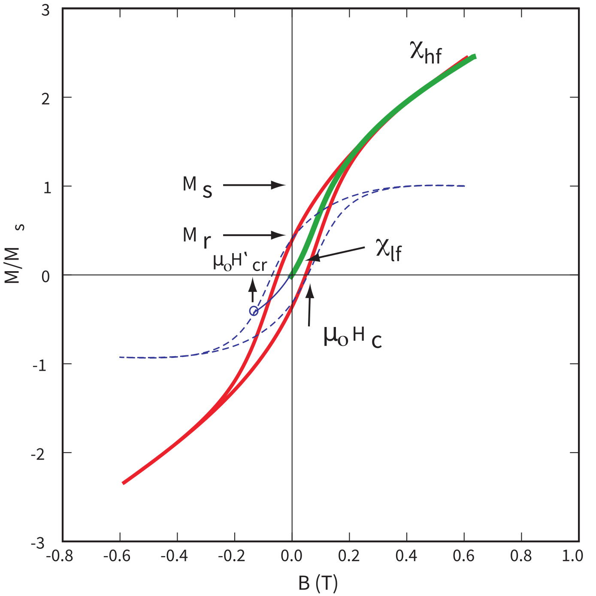
Green: initial curve; red: measured loop, whose high-field slope \(\chi_{hf}\) is the
non-ferromagnetic matrix; dashed blue: the loop after subtracting it.
Tauxe & Swanson-Hysell (2026), Essentials of Paleomagnetism (CC BY 4.0).
\(\chi_{lf}\) — initial slope from a demagnetized state
\(\chi_{hf}\) — slope after ferromagnetic saturation:
primarily para + dia → subtract it (unsaturated hematite/goethite
adds curvature — see approach to saturation, Part 7)
\(\mu_0H_{cr}\) — coercivity of remanence: the backfield that zeros
the remanence (next slides)
Your D-6A troctolites: olivine + plagioclase matrix
→ expect a strong paramagnetic \(\chi_{hf}\) on top of the magnetite loop.
Part 6
Processing your D-6A hysteresis data
From the VSM to your notebook
Yesterday's VSM group measured hysteresis loops + backfield curves on
their unit's D-6A specimens
Data flow: Lake Shore VSM → IRM database → MagIC format → RockmagPy
The hysteresis_processing notebook walks through:
import pmagpy.rockmag as rmag
hyst_experiments = rmag.make_experiment_df(hyst_measurements)
results = rmag.process_hyst_loops(hyst_experiments, measurements)
# → slope correction, Ms, Mr, Bc for every specimen
process_hyst_loop implements the IRM decision tree
(Jackson & Solheid, 2010): gridding, centering & drift checks, quality factor \(Q\),
saturation tests, then the appropriate high-field correction
The hysteresis_processing_walk_through notebook unpacks every step —
the next three slides preview the key ones
RockmagPy —
analysis notebooks for IRM instrument data in MagIC format
A loop is a mixture of the ferromagnetic and dia/paramagnetic responses
A synthetic "troctolite": single-domain magnetite
(Stoner–Wohlfarth loop, Ms = 92 Am²/kg for pure magnetite) in a paramagnetic
olivine-rich matrix. The high-field slope (fit at |B| > 0.7 Bmax) is the paramagnetic
susceptibility; subtracting it closes the loop and yields Ms, Mr, and
Mr/Ms. Try a low magnetite content: the raw loop looks almost like a
paramagnet — the correction rescues the ferromagnetic signal.
When the loop doesn't saturate: approach to saturation
The linear \(\chi_{hf}\) correction assumes the ferromagnetic loop is saturated
in the fitting window — if it isn't, unresolved curvature is absorbed into the slope and
\(M_s\) is underestimated (and \(M_r/M_s\) overestimated)
process_hyst_loopF-tests high-field linearity (windows above 60/70/80%
of peak field); when all fail, it fits the approach-to-saturation model
\(M(H) = \chi_{hf}H + M_s + a_1H^{-1} + a_2H^{-2}\) instead
(fit_type='Fabian' for the Fabian 2006 power law)
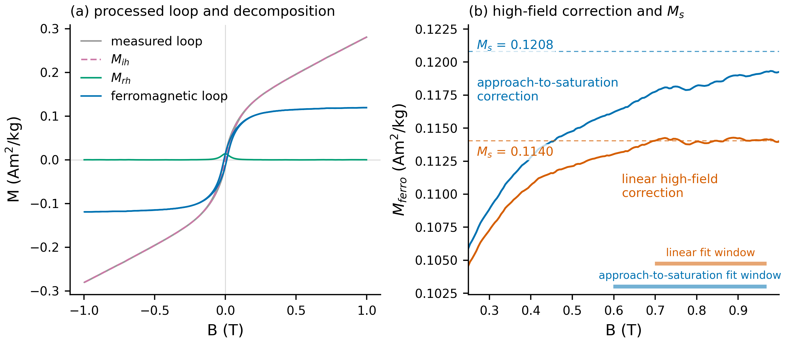
East-central Minnesota Batholith granitoid NED18-2c: the loop fails the linearity
test at all three windows (\(F_{nl}\) up to ~99 vs. a critical value of ~2.5). The linear
correction (orange) flattens the high-field curve and yields an \(M_s\) 6% lower
than the approach-to-saturation fit (blue). Swanson-Hysell et al., RockmagPy paper (in prep.).
If the statistics say "not saturated" even for the
nonlinear fit, \(M_s\) is a minimum estimate at your peak field — watch for this in the
felsic-group and any hematite/goethite-bearing specimens.
Inside the processing: split the loop into two curves
\(M_{rh}\) should be even, \(M_{ih}\) odd — deviations feed the
loop-closure test and quality factor \(Q\)
Jackson & Solheid (2010).
Part 6
Beyond uniform: flower, vortex — and the road to domains
The problem with staying uniform
A uniformly magnetized (single domain, SD) configuration incurs the maximum possible magnetostatic self-energy: \(E_d = \epsilon_d\,v \propto M_s^2\,v\) — a total that scales with the cube of grain diameter
Exchange energy wants spins strictly parallel; self-energy wants the external magnetic field (the surface poles) eliminated
Exchange wins the budget fight only in the smallest grains (≲ 60–70 nm for equant magnetite)
Larger grains minimize this energy penalty by letting the magnetization curl: spins rotate gradually (low exchange cost per neighbor) as the external field — and the self-energy — collapse
Micromagnetic models (e.g., MERRILL) find the configurations that minimize the total: watch the states evolve →
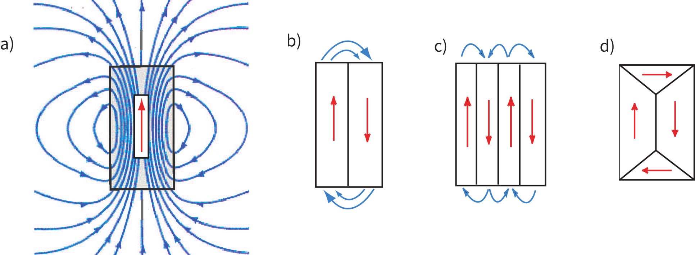
The classical endpoint: subdivision into domains kills the external field.
Tauxe & Swanson-Hysell (2026), Essentials of Paleomagnetism (CC BY 4.0).
What micromagnetics reveals: SD → flower → vortex
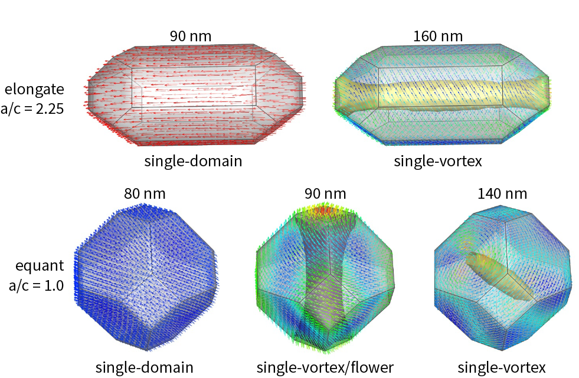
Remanent states of magnetite computed with MERRILL. Top: elongate grains (b/a = 2.25);
bottom: equant grains. Numbers are equivalent-sphere diameters; colors show alignment with easy axes.
Modified from Williams et al. (2024) (CC BY 4.0), via Tauxe & Swanson-Hysell (2026), Essentials of Paleomagnetism.
Equant: uniform at 80 nm → flower (surface spins splay) at 90 nm →
vortex by 140 nm. Elongate: SD survives to larger sizes, and the vortex core
aligns with the long axis.
Explore: the energy budget behind the domain states
Drag the slider to see how the uniform state's self-energy (\(\propto d^3\)) overtakes the area-dependent energy cost (\(\propto d^2\)) of a curled, flux-closed configuration, leading to the departure from single-domain behavior.
Spin structures are schematic 2D slices. Threshold boundaries for equant magnetite modeled after Nagy et al. (2017) and Essentials of Paleomagnetism (Ch. 4).
Absolute energies are highly geometry-dependent; the scaling argument is the key takeaway.
The vortex state can be a faithful recorder
The net moment of a vortex grain is carried almost entirely by the
narrow core; the circulating spins cancel
Vortex states can be remarkably stable: computed relaxation times
exceed the age of the Solar System (Nagy et al., 2017)
Behavior is SD-like in many experiments → historically labeled
"pseudo-single domain" (PSD)
Modern usage: call the states what they are — flower, single vortex,
multi-vortex — "PSD" survives as the label for the in-between hysteresis behavior
Why it matters for D-6A: many of the
magnetite grains in intrusive rocks like the Duluth Complex will be above true SD size —
vortex-state (and MD) grains likely dominate what you are measuring this week.
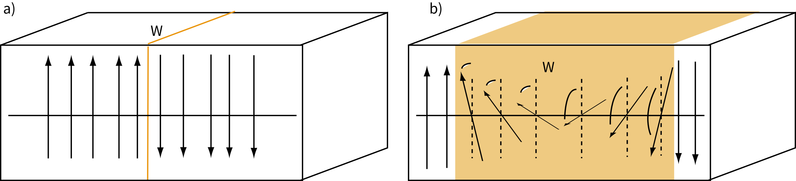
Domain walls: an abrupt flip is exchange-expensive; spreading the rotation
over ~100s of atoms is cheaper but puts spins in hard directions.
Tauxe & Swanson-Hysell (2026) (CC BY 4.0).
Saturate (+2 T) → apply a reverse field → switch it off → measure the remanence;
repeat with ever larger reverse fields. The curve runs from +SIRM to −SIRM; its zero crossing is
\(B_{cr}\), and its derivative is the remanent switching-field distribution — the
coercivity spectrum of the specimen.
Tauxe & Swanson-Hysell (2026), Essentials of Paleomagnetism (CC BY 4.0).
Explore: a simulated backfield experiment
Same Stoner–Wohlfarth population as before (3-D random easy axes;
each grain flips at \(B_K\cdot h_f(\psi)\)). Run the experiment: grains flip in order of switching field
(left panel) and the remanence walks from +SIRM through zero at \(B_{cr}\).
For ideal SD grains \(H_{cr}/H_c \approx 1.09\) — nearly equal. Multidomain grains push the ratio
far higher (≈ 5) — one axis of the Day plot, coming next.
Why Bcr = 0.525 BK — and why the IRM logo looks like that
sIRM state (Mr = 0.5 Ms)
After saturating along +B, every moment sits on the easy-axis direction in the
+B hemisphere: the occupied directions fill a half-space, and the average of
\(\cos\psi\) is exactly ½.
DC demagnetized state (Mr = 0)
At −0.525 BK exactly the axes 30–60° from B flip — \(h_f(\psi)\) is lowest
there — and their moments swing through the origin to the −B side. Black = where
moments now point: the flipped bands cancel the survivors. Still half
dark, but M = 0.
Look familiar? The Institute for Rock Magnetism's
logo is exactly this pair of Stoner–Wohlfarth diagrams — the sIRM half-disk and the
DC-demagnetized pinwheel, every wedge boundary on the 30° grid.
This is why \(B_{cr} = 0.525\,B_K\) for an ideal uniaxial SD
assemblage (\(h_f = 0.525\) at ψ = 30° and 60°) while \(B_c = 0.48\,B_K\) — the ratio
\(H_{cr}/H_c \approx 1.09\) you just saw emerge from the simulation.
Williams, W., Moreno, R., Muxworthy, A. R., Paterson, G. A., Nagy, L., Tauxe, L., Bellon, U. D., Cowan, A. A., & Ferreira, I. (2024). Vortex magnetic domain state behavior in the Day plot. G³, 25, e2024GC011462 — source of the MERRILL domain-state figure (CC BY 4.0)
Primary-source figure credits (O'Reilly 1984; Syono 1963;
Fletcher & O'Reilly 1974; Banerjee 1991; Williams et al. 1995; Joffe & Heuberger 1974; and others)
are given in the slide captions; full bibliographic details are in the
Essentials JupyterBook bibliography.
Slides + interactive widgets: S2_fine_particle_magnetization/ — reveal.js, self-contained, works offline.